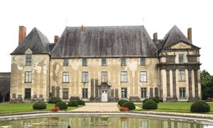
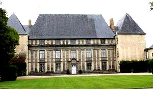
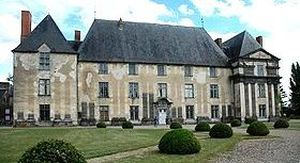
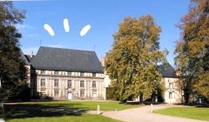
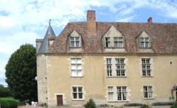
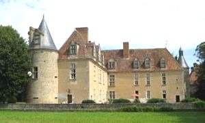
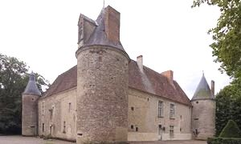
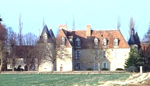
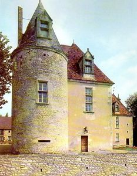

Recensement Jean-Claude Truffet
| Département | 63 — Puy-de-Dôme |
| Canton | Aigueperse |
| Commune | Effiat |
| Type d'édifice | Château |
| Période d'origine | XV |









EFFIAT, fief en 1375 de Louis de Martinges, passa aux Neufville et acquit par Gilbert II de Coëffier qui construit en 1557 et fait partie d'un grand projet d' Antoine Coëffier de Ruzé d'Effiat, dit Ruzé par l'alliance avec Bonne Ruzé, ami de Richelieu et conseiller du roi en 1625, dont les terres furent érigées en marquisat en 1627 et qui devint maréchal de France en 1631. Ses trois fils ne suivent pas les pas du maréchal d'Effiat. Le second Henri d'Effiat marquis de Cinq Mars lieutenant du roi à quinze ans et grand écuyer de Louis XIII à dix neuf grandit au château avant de devenir le favori de Louis XIII entraîné dans une conspiration contre Richelieu. Il fut condamné à avoir la tête tranchée en 1642, la mère lègue le château à son petit fils qui décédera sans postérité en 1719, le château revient à un parent Paul-Jules de la Meilleraye neveu du cardinal de Mazarin, puis passera à Louis de la Tour d'Auvergne et au financier John Law. Le château est racheté en 1728 par le comte de Sampigny d'Yssoncourt qui y résidera jusqu'en 1846 date à laquelle la dernière et heritière ruinée s'en débarrasse le vend à un marchand nommé Boucard qui le revend aussitôt à la famille de Moroges qui le sauve de la destruction. DENONE, ce charmant petit château, entouré de douves, d'allées de tilleuls et de marronniers, a été édifié dans les années 1560 par Charles de Marillac qui fut ambassadeur de France au temps de François Ier et de Henri II. Il appartint notamment aux comtes d'Effiat, ainsi qu'à la famille de Louise de Marillac. Marqué par le destin tragique de l'un des leurs, Cinq-Mars qui inspira le roman de Vigny. Le Cardinal de Richelieu, reçu par le Marquis d'Effiat qui avait acheté Denone a une héritière des Marillac, y séjourna du 4 au 8 septembre 1629 lors d'un voyage en Auvergne. Un superbe lit Louis XIII à baldaquins cramoisis rappelle le passage de Richelieu dans la chambre dite "du Cardinal" où on peut admirer de ravissants plafonds peints dans un style d'inspiration italienne. Au XVIIIe siècle le domaine appartient au financier John Law, aujourd'hui à la famille Pourtier.
château d'Effiat est situé au milieu d'une enceinte rectangulaire limitée par un canal formant douves. L'entrée se fait par un pont-levis et une porte monumentale. Le château est actuellement constitué d'un corps de logis rectangulaire d'ordonnance classique à trois niveaux encadré de deux pavillons rectangulaires saillants, et les ailes qui les prolongeaient ont disparues. La façade est ornée de pilastres doriques. Les bâtiments des communs et de la ferme datent de la fin du XVIIe siècle, toiture en croupe avec pente assez prononcé. Le château d'Effiat a été classé monument historique le 16 avril 1942 puis inscrit 6 juin 1980 et à nouveau classé le 10 mars 2004.
Le château de Denone, admirable bâtiment dont la construction remonte au XVIe siècle, situé dans le hameau du même nom. Le château a été construit en 1550 à l'emplacement d'un château féodal. Le bâtiment Renaissance s'appuie sur 3 tours plus anciennes, restes d'une petite forteresse antérieure, Il est situé au milieu d'un jardin aménagé au XVIIe siècle bordé à l'ouest de douves, et à l'est de communs dont certaines parties datent du XVIIe siècle. Le château est constitué de deux corps de logis perpendiculaires, flanqués de trois tours circulaires à leurs angles extérieurs. Ils sont divisés en pièces faisant toute la largeur des ailes, moins le couloir qui les dessert. Ces deux couloirs distribuent l'édifice à partir d'un escalier droit dont les volées sont séparées par un mur d'échiffre. La tour nord renferme un escalier à vis. A l'intérieur l'édifice a conservé au premier étage, deux plafonds en bois à poutres et poutrelles décorés de peintures de la fin du XVIe ou début XVIIe siècle, les autres pièces présentent des plafonds à la française, des cheminées XVIIe et XVIIIe siècle.
Marquis de Cinq Mars Famille de Charles de Marillac
"
Château d'Effiat et de Denone.